Reinforcement Learning
Comprendre les fondements du Reinforcement Learning — agent, environnement, récompense, politique — et implémenter Q-Learning et Deep Q-Networks avec Gymnasium et Stable Baselines 3.
- Cheatsheet — Reinforcement Learning
- ️ Récapitulatif — Erreurs clés à éviter
- 1) Qu'est-ce que le Reinforcement Learning ?
- 2) Fondements du RL
- 3) Exemples concrets
- 4) Algorithmes de RL
- 5) Q-Learning en détail
- 6) Deep Q-Networks (DQN)
- 7) Gymnasium — Environnements RL
- 8) Stable Baselines 3 — Algorithmes RL
- Bibliographie
- Challenges
📋 Cheatsheet — Reinforcement Learning
Concepts clés
## Composants du RL :
## - Agent : le décideur (apprend une politique)
## - Environment : le monde avec lequel l'agent interagit
## - State (s) : situation actuelle de l'environnement
## - Action (a) : choix de l'agent
## - Reward (r) : feedback après une action
## - Policy (π) : stratégie = mapping état → action
## Boucle RL : Observe → Act → Reward → Learn → RepeatQ-Learning — Bellman equation
## Q(s, a) = "qualité" de prendre l'action a dans l'état s
## Mise à jour après chaque step :
## Q(s,a) ← Q(s,a) + α * [R(s,a) + γ * max Q(s',a') - Q(s,a)]
#
## α = learning rate (0.1) : vitesse de mise à jour
## γ = discount factor (0.99) : importance des récompenses futures
## ε = exploration rate : proba d'action aléatoire (décroît au fil du temps)Gymnasium — Interagir avec un environnement
import gymnasium as gym
env = gym.make('FrozenLake-v1', is_slippery=False) # crée l'environnement
state, info = env.reset() # démarre un épisode
action = env.action_space.sample() # action aléatoire (exploration)
next_state, reward, terminated, truncated, info = env.step(action) # exécute l'action
env.close() # libère les ressourcesStable Baselines 3 — Entraîner un agent DQN
from stable_baselines3 import DQN
from stable_baselines3.common.evaluation import evaluate_policy
import gymnasium as gym
env = gym.make('FrozenLake-v1', is_slippery=False)
## Entraîner
model = DQN("MlpPolicy", env, verbose=1) # MlpPolicy = réseau fully-connected
model.learn(total_timesteps=100_000) # entraîne pendant 100K steps
model.save("dqn_frozen_lake") # sauvegarde le modèle
## Évaluer
model = DQN.load("dqn_frozen_lake", env=env) # charge le modèle
mean_reward, std = evaluate_policy(model, env, n_eval_episodes=1000)
## Utiliser
state, info = env.reset()
action, _ = model.predict(state) # le modèle choisit l'action
next_state, reward, terminated, truncated, info = env.step(int(action))
## Répéter predict → step jusqu'à terminated ou truncated⚠️ Récapitulatif — Erreurs clés à éviter
Confondre exploration et exploitation
Un agent qui n'explore jamais reste bloqué dans une stratégie sous-optimale. Un agent qui explore tout le temps n'exploite jamais ce qu'il sait.
❌ ε = 0 dès le début → l'agent ne découvre jamais les meilleures actions
✅ Commencer avec ε élevé (exploration), puis le décroître progressivement (exploitation)
Utiliser Q-Learning avec une Q-table sur un espace d'états trop grand
La Q-table croît exponentiellement avec le nombre d'états et d'actions — impossible pour des images ou des espaces continus.
❌ Q-table sur un jeu Atari (millions d'états-pixels possibles)
✅ Utiliser un Deep Q-Network (DQN) qui approxime la Q-function avec un réseau de neurones
Oublier que les récompenses sont souvent retardées (delayed rewards)
L'agent doit connecter des actions présentes à des récompenses futures — une récompense immédiate n'est pas toujours le meilleur signal.
❌ γ = 0 (discount factor nul) → l'agent ne regarde que la récompense immédiate
✅ γ proche de 1 (ex: 0.99) pour valoriser les récompenses futures dans les tâches épisodiques
Ne pas distinguer tâches épisodiques et continues
En épisodique (jeu, labyrinthe), l'épisode finit naturellement. En continu (robot de surveillance), il n'y a pas de fin — le design des récompenses est très différent.
❌ Appliquer un algorithme épisodique sans adaptation à un environnement continu
✅ Choisir l'algorithme et le design de récompense adaptés au type de tâche
Lancer model.learn() avec trop peu de timesteps
Le RL nécessite beaucoup d'interactions pour converger — bien plus que le supervised learning.
❌ model.learn(total_timesteps=1000) sur un environnement complexe → politique aléatoire
✅ Commencer avec 100K–1M timesteps, évaluer, puis augmenter si nécessaire
1) Qu'est-ce que le Reinforcement Learning ?
Le RL est une branche du ML où un agent apprend à prendre des décisions en interagissant avec son environnement pour maximiser une récompense cumulée.
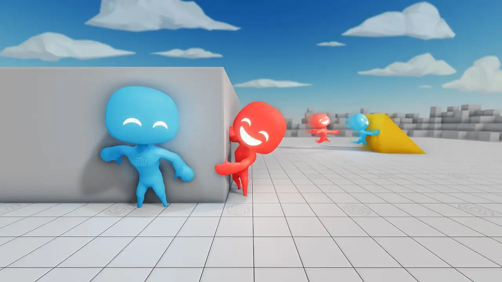
👉 Vidéo — Agents jouant à cache-cache (OpenAI)
1.1 Où se situe le RL dans le ML ?
| Paradigme | Données | Objectif |
|---|---|---|
| Supervised Learning | Données labellées (X, y) | Apprendre une fonction X → y |
| Unsupervised Learning | Données non labellées (X) | Trouver des patterns dans X |
| Reinforcement Learning | Pas de dataset — essai-erreur | Maximiser les récompenses cumulées |
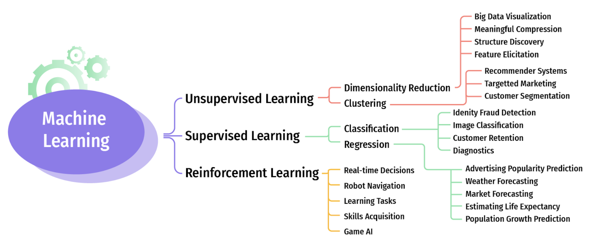
1.2 Applications réelles
- 🎮 Jeux vidéo — Atari, Dota, Go (AlphaGo)
- 🚗 Véhicules autonomes — conduite en simulation et réel
- 💰 Trading — décisions buy/sell pour maximiser le profit
- 🤖 Robotique — locomotion, manipulation d'objets
2) Fondements du RL
2.1 Composants clés
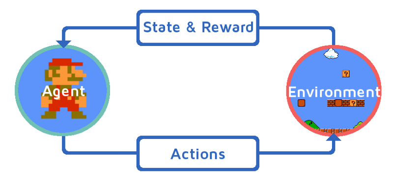
- Agent : le décideur qui cherche à atteindre un objectif
- Environment : le monde avec lequel l'agent interagit
- State (s) : ce que l'agent sait de sa situation actuelle
- Action (a) : choix que fait l'agent pour influencer l'environnement
- Reward (r) : feedback qui indique la qualité de l'action
2.2 La boucle RL
👀 Observer → 🎯 Agir → 🏆 Recevoir reward → 🧠 Apprendre → 🔁 Répéter
2.3 Exploration vs Exploitation
- Exploitation : choisir les actions connues qui donnent de bonnes récompenses
- Exploration : essayer de nouvelles actions pour découvrir de meilleures stratégies
L'équilibre exploration/exploitation est contrôlé par le paramètre ε (epsilon). On commence avec ε élevé (exploration), puis on le décroît progressivement.
2.4 Espaces d'actions
- Discret : ensemble fini d'actions (haut, bas, gauche, droite)
- Continu : actions sur un spectre (angle de direction, accélération)
2.5 Tâches épisodiques vs continues
- Épisodique : début et fin clairs (un round de jeu, un labyrinthe)
- Continue : pas de fin naturelle (robot de surveillance, trading)
2.6 Récompenses retardées (delayed rewards)
Les meilleures actions ne sont pas récompensées immédiatement — l'agent doit relier ses actions présentes à des résultats futurs.
2.7 Politique (Policy)
La politique π est la stratégie de l'agent : un mapping état → action. Une bonne politique maximise la récompense cumulée.
3) Exemples concrets
3.1 Naviguer dans un labyrinthe
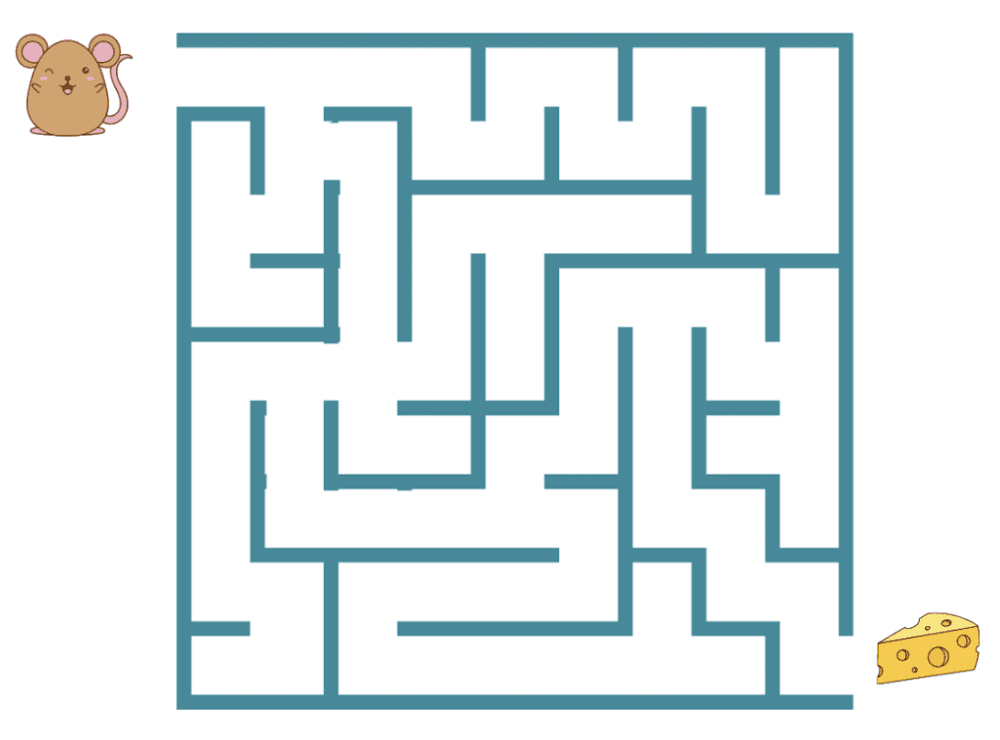
State = cellule du grid | Action = haut/bas/gauche/droite | Reward = pénalité par step, grosse récompense à la sortie
3.2 Entraîner un chien
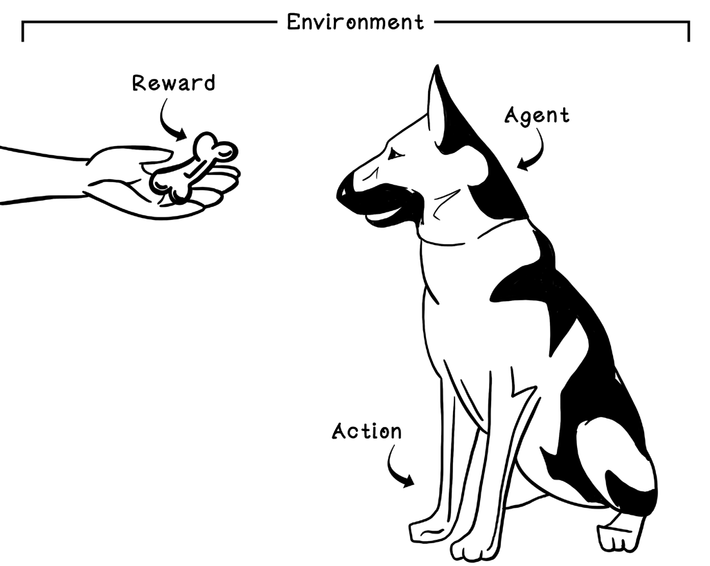
Action = sit/jump/roll | Reward = friandise | Delayed rewards = récompense après une routine complète
3.3 Voiture autonome
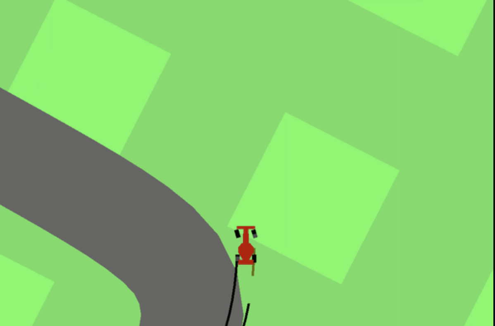
State = vitesse, position, trafic | Action = direction, accélération (continu) | Reward = +sécurité, −collision
4) Algorithmes de RL

4.1 Model-Free vs Model-Based
| Model-Free | Model-Based | |
|---|---|---|
| Principe | Apprend par essai-erreur, sans modèle | Utilise un modèle pour planifier |
| Analogie | Apprendre un jeu en y jouant | Utiliser un GPS pour planifier |
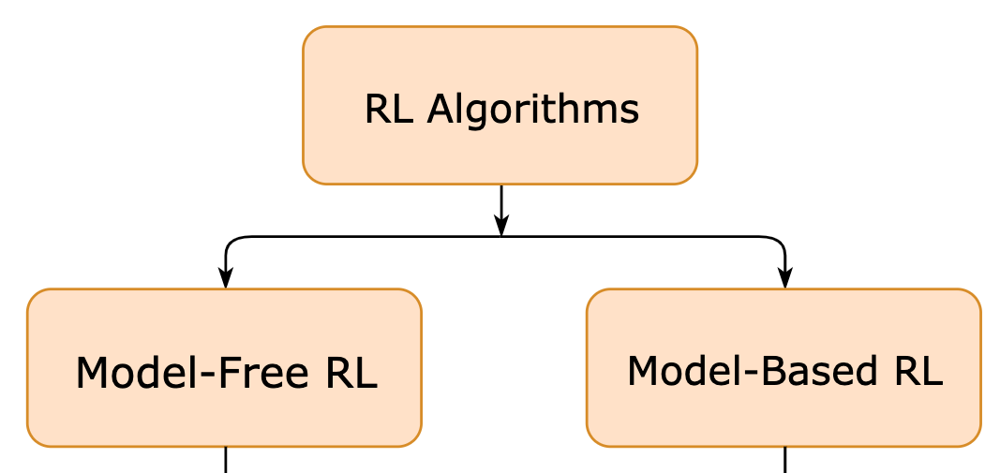
4.2 Q-Learning vs Policy Optimization
| Q-Learning | Policy Optimization | |
|---|---|---|
| Principe | Apprend la valeur de chaque action, choisit la meilleure | Apprend directement la meilleure politique |
| Analogie | Note chaque plat, choisit le meilleur | Apprend à toujours commander le spécial du chef |
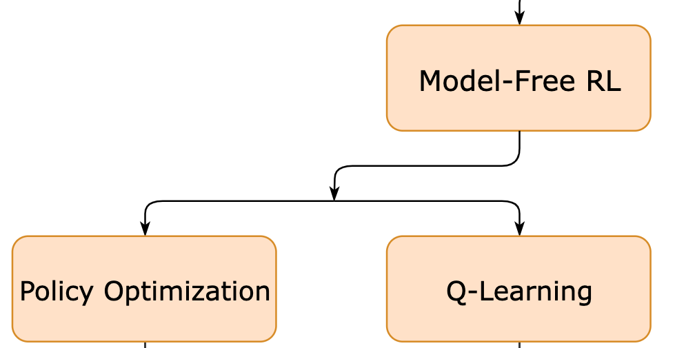
5) Q-Learning en détail
5.1 Fonctions de valeur
- V(s) = combien vaut l'état s (state value function)
- Q(s, a) = combien vaut l'action a dans l'état s (action-value function)
Avec une Q-function connue, la politique est simple : dans chaque état, prendre l'action avec le Q le plus élevé.
5.2 Algorithme Q-Learning
L'agent construit une Q-table qui stocke les estimations de récompense cumulée pour chaque paire (état, action).
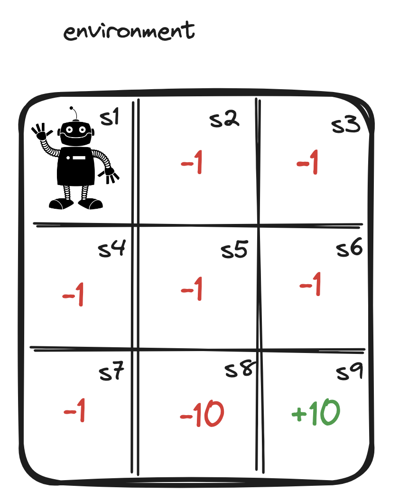
Étapes :
- Initialiser la Q-table à 0
- Choisir une action (ε-greedy : aléatoire avec proba ε, meilleure sinon)
- Exécuter l'action, observer le reward et le nouvel état
- Mettre à jour la Q-table via l'équation de Bellman
- Répéter jusqu'à convergence
5.3 Équation de Bellman
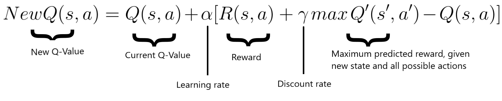
$Q(s,a) \leftarrow Q(s,a) + \alpha \left[ R(s,a) + \gamma \max_{a'} Q(s',a') - Q(s,a) \right]$
Décomposition :
- $R(s,a)$ = récompense immédiate
- $\gamma \max_{a'} Q(s',a')$ = meilleure valeur future (discountée)
- $\alpha$ = learning rate (fraction de mise à jour)
5.4 Hyperparamètres
| Paramètre | Rôle | Effet |
|---|---|---|
| α (learning rate) | Vitesse de mise à jour de Q | α élevé → rapide mais instable |
| γ (discount factor) | Importance des récompenses futures | γ → 1 = long terme, γ → 0 = court terme |
| ε (exploration rate) | Proba d'action aléatoire | Décroît au fil de l'entraînement |
Q-Learning fonctionne bien sur des environnements petits et discrets. Pour des espaces d'états grands ou continus, il faut passer au Deep Q-Network.
6) Deep Q-Networks (DQN)
6.1 Principe
Remplacer la Q-table par un réseau de neurones qui prend un état en entrée et prédit les Q-values pour toutes les actions possibles.
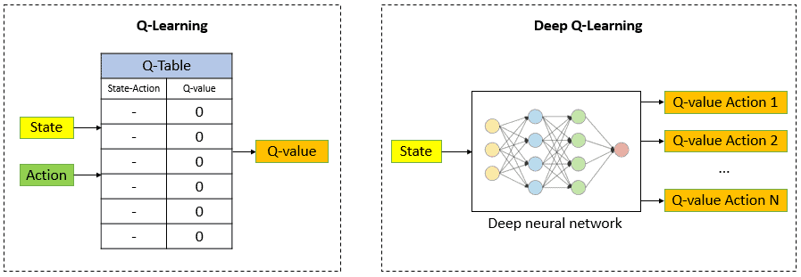
6.2 Avantages par rapport au Q-Learning
- Gère des espaces d'états massifs (images, signaux continus)
- Généralise entre des états similaires (le réseau apprend des patterns)
- Permet le RL sur des tâches complexes : Atari, robotique, conduite autonome
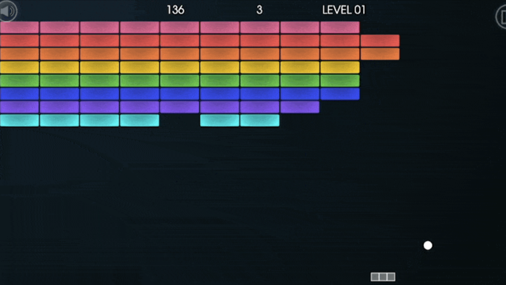
Plus d'algorithmes RL disponibles sur la librairie Stable Baselines 3 : DQN, PPO, A2C, SAC…
7) Gymnasium — Environnements RL
7.1 Installation et chargement
## pip install gymnasium
import gymnasium as gym
env = gym.make('FrozenLake-v1', is_slippery=False) # environnement FrozenLake 4×47.2 Interactions de base
state, info = env.reset() # démarre un nouvel épisode
action = env.action_space.sample() # action aléatoire
## FrozenLake : 0=left, 1=down, 2=right, 3=up
next_state, reward, terminated, truncated, info = env.step(action)
## terminated = True si l'agent a atteint le goal ou est tombé dans un trou
## truncated = True si le temps est écoulé
env.close() # libère les ressourcesGymnasium propose des dizaines d'environnements : CartPole-v1, MountainCar-v0, Taxi-v3, jeux Atari… 👉 Catalogue complet
8) Stable Baselines 3 — Algorithmes RL
8.1 Pipeline complet
## pip install 'stable-baselines3[extra]'
from stable_baselines3 import DQN
from stable_baselines3.common.vec_env import DummyVecEnv
from stable_baselines3.common.evaluation import evaluate_policy
import gymnasium as gym
## 1. Charger l'environnement
env = gym.make('FrozenLake-v1', is_slippery=False, render_mode=None)
env = DummyVecEnv([lambda: env]) # wrapper requis par SB3
## 2. Entraîner
model = DQN('MlpPolicy', env, verbose=1) # MlpPolicy = réseau FC
model.learn(total_timesteps=100_000) # 100K interactions
model.save('dqn_frozen_lake') # sauvegarde
## 3. Évaluer
model = DQN.load('dqn_frozen_lake', env=env)
mean_reward, std = evaluate_policy(model, env, n_eval_episodes=1000)
print(f"Mean reward: {mean_reward} ± {std}")
## 4. Utiliser
env2 = gym.make('FrozenLake-v1', render_mode='human', is_slippery=False)
state, info = env2.reset()
action, _ = model.predict(state) # le modèle décide
state, reward, terminated, truncated, info = env2.step(int(action))
## Répéter predict → step jusqu'à terminated ou truncated📚 Bibliographie
- 👉 Gymnasium documentation
- 👉 Stable Baselines 3 documentation
- 👉 OpenAI Spinning Up — Intro to RL
- 👉 Towards Data Science — Illustrated Guide to RNNs
- 👉 Gym environment solutions repository
- 👉 Le Wagon — Starter notebook RL
🚀 Challenges
- Implémenter Q-Learning from scratch sur FrozenLake et visualiser la convergence de la Q-table
- Entraîner un agent DQN avec Stable Baselines 3 sur CartPole et FrozenLake
- Comparer les performances de DQN, PPO et A2C sur un même environnement
- 🧭 Introduction
- 1. Qu'est-ce que le Reinforcement Learning ?
- 2. Les briques fondamentales
- 3. Exploration vs Exploitation : le grand dilemme
- 4. Q-Learning : apprendre la valeur des actions
- 5. Deep Q-Networks (DQN) : quand la Q-table ne suffit plus
- 6. Gymnasium — Pratiquer avec des environnements RL
- 7. Stable Baselines 3 — Entraîner un agent sans tout coder
- 8. Récapitulatif des erreurs classiques
- 🎯 Questions de vérification
- 📌 TL;DR
🧭 Introduction
Le Reinforcement Learning (RL), ou apprentissage par renforcement, est un mode d'apprentissage radicalement différent du Machine Learning classique. Pas de tableau de données labellées ici : l'agent apprend seul, en essayant des actions et en recevant des signaux de succès ou d'échec.
L'analogie fil rouge : dresser un chien avec des friandises
Imagine que tu veux apprendre à ton chien à s'asseoir. Tu n'as pas de manuel, tu essaies. Quand il s'assoit, tu lui donnes une friandise (récompense positive). Quand il saute partout, rien — ou peut-être un "non" ferme (récompense nulle ou négative). Avec le temps, le chien comprend quelles actions lui valent des friandises, et il les répète. C'est exactement le principe du RL.
Dans cette analogie :
- Le chien = l'agent (celui qui apprend et décide)
- Toi et la pièce autour = l'environnement
- La position du chien à chaque instant = l'état
- S'asseoir, sauter, rouler = les actions possibles
- La friandise (ou son absence) = la récompense
- La stratégie globale du chien pour maximiser les friandises = la politique
5 points à retenir absolument
- L'agent apprend par essai-erreur, sans données labellées au départ.
- L'objectif est de maximiser la récompense cumulée sur le long terme, pas juste la prochaine friandise.
- Il faut équilibrer exploration (essayer de nouvelles choses) et exploitation (répéter ce qui marche).
- Le Q-Learning construit un tableau des meilleures actions par situation. Le Deep Q-Network (DQN) remplace ce tableau par un réseau de neurones pour gérer des situations complexes.
- Des librairies comme Gymnasium (environnements) et Stable Baselines 3 (algorithmes) permettent de pratiquer le RL sans repartir de zéro.
Mini-plan du cours
- Qu'est-ce que le RL et où se situe-t-il dans le ML ?
- Les briques fondamentales : agent, état, action, récompense, politique
- Le dilemme exploration vs exploitation
- Le Q-Learning : comment un agent construit sa "carte des bonnes actions"
- L'équation de Bellman : la formule clé de mise à jour
- Des Q-tables aux Deep Q-Networks (DQN)
- Pratiquer avec Gymnasium
- Entraîner un agent avec Stable Baselines 3
1. Qu'est-ce que le Reinforcement Learning ?
1.1 Sa place dans le Machine Learning
Il existe trois grandes familles d'apprentissage automatique :
| Paradigme | Ce qu'on lui donne | Ce qu'il apprend |
|---|---|---|
| Supervised Learning | Des exemples labellés (photos + étiquettes) | À prédire une étiquette pour un nouvel exemple |
| Unsupervised Learning | Des données brutes (sans étiquette) | À trouver des groupes, des patterns |
| Reinforcement Learning | Rien — juste un environnement et un score | À prendre les meilleures décisions pour maximiser ce score |
Le RL n'a pas de "bonne réponse" à imiter. Il découvre lui-même ce qui fonctionne, comme un enfant qui apprend à marcher en tombant et en se relevant.
1.2 Exemples concrets d'applications
- Jeux vidéo : AlphaGo (DeepMind) a battu le champion du monde de Go. Des agents RL maîtrisent des jeux Atari mieux que n'importe quel humain.
- Voitures autonomes : l'agent apprend à conduire en simulation, en recevant des pénalités lors des collisions et des récompenses pour les kilomètres parcourus.
- Trading : l'agent apprend à acheter et vendre des actifs financiers pour maximiser le profit.
- Robotique : un bras robotique apprend à saisir un objet par essai-erreur, sans qu'on lui programme chaque mouvement.
- Chatbots (RLHF) : les LLMs comme ChatGPT sont affinés avec du RL à partir du feedback humain (Reinforcement Learning from Human Feedback).
2. Les briques fondamentales
2.1 Agent, Environnement, État, Action, Récompense
Voici comment s'articulent les composants du RL :
Agent → choisit une Action → l'Environnement réagit → renvoie un nouvel État + une Récompense → l'Agent apprend → répèteChaque composant en détail :
- Agent : le "cerveau" qui prend des décisions. C'est lui qu'on entraîne.
- Environnement : tout ce qui est extérieur à l'agent. Il répond aux actions et renvoie une observation.
- État (s) : la description de la situation actuelle telle que perçue par l'agent. Exemple : "je suis dans la case (2,3) du labyrinthe", ou "la balle est à la position (x,y) avec une vitesse v".
- Action (a) : ce que l'agent peut faire. Exemple : aller à gauche, sauter, accélérer.
- Récompense (r) : un signal numérique qui indique si l'action était bonne ou mauvaise. +1 pour avoir réussi, -1 pour être tombé dans un trou, 0 sinon.
La récompense est souvent retardée : une action maintenant peut n'avoir de conséquence positive que 10 étapes plus tard. C'est ce qui rend le RL difficile — on ne sait pas toujours quelle action a "vraiment" causé le succès.
2.2 La boucle RL
La boucle fondamentale du RL se répète indéfiniment :
1. Observer l'état actuel s
2. Choisir une action a (selon la politique)
3. Exécuter a dans l'environnement
4. Recevoir la récompense r et le nouvel état s'
5. Mettre à jour la connaissance de l'agent
6. Recommencer depuis s'Exemple avec le chien : il observe la pièce (état), décide de s'asseoir (action), reçoit une friandise (récompense +1), se retrouve assis (nouvel état), et retient que "s'asseoir quand le maître est debout devant moi" vaut des friandises.
2.3 Politique (Policy)
La politique $\pi$ (lettre grecque "pi") est la stratégie complète de l'agent : pour chaque état possible, elle indique quelle action choisir.
C'est la "recette de cuisine" de l'agent. L'entraînement RL, c'est précisément le fait d'améliorer cette politique pour que les décisions prises rapportent le plus de récompenses possible sur la durée.
2.4 Tâches épisodiques vs continues
- Épisodique : il y a un début et une fin clairs. Exemple : une partie d'échecs, traverser un labyrinthe. On parle d'épisode. L'agent repart de zéro à chaque épisode.
- Continue : pas de fin. Exemple : un robot de surveillance qui tourne en permanence, un système de trading. L'agent doit gérer l'accumulation infinie de récompenses.
3. Exploration vs Exploitation : le grand dilemme
3.1 Le problème
Imagine que tu arrives dans une nouvelle ville et que tu dois choisir un restaurant. Tu connais déjà un bon restaurant (tu y es allé hier). Est-ce que tu :
- Exploites : tu retournes au restaurant connu, car tu sais que c'est bon ?
- Explores : tu essaies un nouveau restaurant, qui pourrait être meilleur... ou bien pire ?
L'agent RL fait face exactement à ce dilemme à chaque action.
- Exploitation : choisir l'action qui semble la meilleure selon ce que l'on sait déjà.
- Exploration : choisir une action aléatoire pour découvrir de nouvelles possibilités.
3.2 La stratégie ε-greedy (epsilon-greedy)
La solution la plus courante : le paramètre ε (epsilon), un nombre entre 0 et 1.
- Avec une probabilité $\varepsilon$ → l'agent choisit une action aléatoire (exploration)
- Avec une probabilité $1 - \varepsilon$ → l'agent choisit la meilleure action connue (exploitation)
Au début de l'entraînement, $\varepsilon$ est élevé (beaucoup d'exploration). On le diminue progressivement : l'agent explore de moins en moins car il a appris à bien se comporter.
Si $\varepsilon = 0$ dès le début, l'agent n'explore jamais et reste coincé dans une stratégie médiocre. Si $\varepsilon = 1$ en permanence, il ne capitalise jamais sur ce qu'il a appris. On part souvent de $\varepsilon = 1.0$ et on descend progressivement jusqu'à $\varepsilon = 0.01$.
4. Q-Learning : apprendre la valeur des actions
4.1 La Q-function : "combien vaut cette action dans cette situation ?"
Le Q-Learning repose sur l'idée d'affecter une note à chaque paire (état, action). Cette note s'appelle la Q-value :
Plus la Q-value est haute, plus l'action est prometteuse dans cet état.
Exemple avec le labyrinthe : l'agent est dans la case (2,2), juste à côté d'un trou. La Q-value de l'action "aller à droite vers le trou" sera très basse (grosse pénalité prévue), tandis que "aller en haut vers la sortie" sera élevée.
4.2 La Q-table
Pour les environnements simples, on stocke toutes les Q-values dans un tableau : la Q-table.
- Une ligne par état possible
- Une colonne par action possible
- Chaque case contient la Q-value estimée
Au départ, toutes les cases sont à 0. L'agent explore et met à jour les cases au fur et à mesure.
Exemple FrozenLake : un lac gelé 4×4 = 16 cases (états) × 4 directions (actions) = une Q-table de 16 × 4 = 64 cases.
4.3 L'équation de Bellman : la formule de mise à jour
C'est le coeur du Q-Learning. Après chaque action, on met à jour la Q-value grâce à l'équation de Bellman :
Décryptons symbole par symbole :
| Symbole | Nom | Rôle | Analogie chien |
|---|---|---|---|
| $Q(s, a)$ | Q-value actuelle | Ce qu'on sait déjà | Note actuelle de "s'asseoir" |
| $\alpha$ | Learning rate | Vitesse de mise à jour | À quel point le chien retient rapidement |
| $R(s,a)$ | Récompense immédiate | Ce qu'on vient de gagner | La friandise reçue tout de suite |
| $\gamma$ | Discount factor | Importance du futur vs présent | Le chien préfère-t-il la friandise maintenant ou demain ? |
| $\max_{a'} Q(s', a')$ | Meilleure Q-value future | Meilleur scénario depuis le nouvel état | "Depuis là où je suis, la meilleure suite possible" |
Intuition : la nouvelle Q-value est une combinaison de ce qu'on savait et de ce qu'on vient d'apprendre (récompense immédiate + meilleure perspective future).
Exemple numérique pas à pas
Situation : l'agent est dans l'état $s$, choisit l'action $a$, reçoit une récompense $R = +1$ et atterrit dans $s'$ où la meilleure Q-value disponible est $\max Q(s', a') = 0.8$.
Paramètres : $\alpha = 0.1$, $\gamma = 0.99$, $Q(s, a)$ actuel $= 0.5$.
La Q-value est passée de 0.5 à 0.63 — elle a augmenté car l'action s'est révélée bonne.
4.4 Les hyperparamètres du Q-Learning
| Paramètre | Valeur typique | Effet si trop grand | Effet si trop petit |
|---|---|---|---|
| α (learning rate) | 0.1 | Apprentissage instable, oscille | Apprentissage trop lent |
| γ (discount factor) | 0.99 | Vision très long terme (parfois flou) | L'agent ne voit pas plus loin que le prochain pas |
| ε (exploration) | 1.0 → 0.01 | Trop d'exploration, n'exploite pas | Ne découvre jamais rien de nouveau |
γ proche de 1 = l'agent est "patient", il valorise les récompenses futures presque autant que les immédiates. γ proche de 0 = l'agent est "myope", il ne pense qu'à la prochaine friandise.
5. Deep Q-Networks (DQN) : quand la Q-table ne suffit plus
5.1 La limite de la Q-table
La Q-table stocke une valeur pour chaque paire (état, action). Ça marche parfaitement pour des environnements petits comme FrozenLake (16 états × 4 actions). Mais imaginez :
- Jeu Atari : l'état = une image en pixels. Des millions de pixels = des milliards de combinaisons possibles. Impossible de stocker une Q-table.
- Voiture autonome : l'état = vitesse + position + angle + trafic... un espace continu infini.
La Q-table explose en taille dès que l'espace des états devient grand ou continu. On ne peut pas la stocker, et encore moins l'apprendre efficacement.
5.2 La solution : remplacer la table par un réseau de neurones
Un Deep Q-Network (DQN) est simplement un réseau de neurones qui :
- Prend en entrée : l'état actuel (pixels, vecteurs de features...)
- Retourne en sortie : les Q-values pour chaque action possible
Au lieu de consulter une case dans un tableau, on fait une prédiction avec le réseau. Et au lieu de mettre à jour une case, on entraîne le réseau (backpropagation) pour que ses prédictions se rapprochent des Q-values cibles calculées via Bellman.
État s (pixels ou vecteur)
↓
[Réseau de neurones]
↓
Q(s, gauche), Q(s, droite), Q(s, haut), Q(s, bas)
↓
Choisir l'action avec le Q maxAvantages du DQN :
- Gère des espaces d'états massifs (images, séquences)
- Généralise : si deux états se ressemblent, les Q-values prédites seront proches — sans avoir besoin de les avoir tous vus
- Permet le RL sur des tâches complexes (Atari, robotique)
La différence entre Q-Learning et DQN, c'est la même que la différence entre une lookup table et une fonction apprise. L'une consulte, l'autre prédit.
6. Gymnasium — Pratiquer avec des environnements RL
6.1 C'est quoi Gymnasium ?
Gymnasium (anciennement OpenAI Gym) est une librairie Python qui fournit des environnements RL prêts à l'emploi : labyrinthes, jeux Atari, simulateurs physiques... L'interface est toujours la même, quelle que soit la complexité de l'environnement.
6.2 Créer et explorer un environnement
import gymnasium as gym
# Créer l'environnement FrozenLake : un lac gelé 4×4
# is_slippery=False : on enlève le hasard pour simplifier
env = gym.make('FrozenLake-v1', is_slippery=False)
# Inspecter l'espace des états et des actions
print(env.observation_space) # Discrete(16) → 16 états possibles (les 16 cases)
print(env.action_space) # Discrete(4) → 4 actions : 0=gauche, 1=bas, 2=droite, 3=haut6.3 La boucle d'interaction de base
Voici comment faire interagir un agent (ici aléatoire) avec l'environnement :
import gymnasium as gym
env = gym.make('FrozenLake-v1', is_slippery=False)
# Démarrer un nouvel épisode — l'agent revient à la case départ
state, info = env.reset()
print(f"État initial : {state}") # 0 = case en haut à gauche
done = False
total_reward = 0
while not done:
# Choisir une action aléatoire (stratégie d'exploration pure)
action = env.action_space.sample() # 0, 1, 2 ou 3 au hasard
# Exécuter l'action dans l'environnement
next_state, reward, terminated, truncated, info = env.step(action)
# next_state : nouvelle case où l'agent se trouve
# reward : 1.0 si l'agent atteint le but (G), 0.0 sinon
# terminated : True si l'épisode est terminé (but atteint ou trou)
# truncated : True si on a dépassé le nombre max de steps
total_reward += reward
state = next_state
done = terminated or truncated # l'épisode est fini si l'un ou l'autre est True
print(f"Récompense totale : {total_reward}") # 1.0 = succès, 0.0 = échec
# Libérer les ressources à la fin
env.close()Récap : reset() démarre un épisode, step(action) avance d'un pas et retourne 5 valeurs, close() libère la mémoire.
Gymnasium propose des dizaines d'environnements : CartPole-v1 (équilibrer un balancier), MountainCar-v0 (voiture dans une vallée), Taxi-v3 (taxi dans une grille), et des jeux Atari complets.
7. Stable Baselines 3 — Entraîner un agent sans tout coder
7.1 C'est quoi Stable Baselines 3 ?
Stable Baselines 3 (SB3) est une librairie PyTorch qui implémente les algorithmes RL les plus populaires (DQN, PPO, A2C, SAC...) de façon robuste et réutilisable. On n'a pas besoin de coder l'algorithme soi-même : on choisit, on configure, on entraîne.
7.2 Pipeline complet : entraîner, évaluer, utiliser
Voici un pipeline complet pour entraîner un agent DQN sur FrozenLake :
from stable_baselines3 import DQN # l'algorithme DQN
from stable_baselines3.common.vec_env import DummyVecEnv # wrapper obligatoire pour SB3
from stable_baselines3.common.evaluation import evaluate_policy # outil d'évaluation
import gymnasium as gym
# ── ÉTAPE 1 : Créer l'environnement ──────────────────────────────────────
env = gym.make('FrozenLake-v1', is_slippery=False, render_mode=None)
env = DummyVecEnv([lambda: env]) # SB3 requiert ce wrapper — permet la vectorisation
# ── ÉTAPE 2 : Créer et entraîner le modèle ───────────────────────────────
model = DQN(
'MlpPolicy', # MlpPolicy = réseau fully-connected (Multi-Layer Perceptron)
env,
verbose=1 # affiche les logs d'entraînement
)
model.learn(total_timesteps=100_000) # 100 000 interactions agent-environnement
# ⚠️ Le RL a besoin de BEAUCOUP de données — 100K est un minimum pour FrozenLake
model.save('dqn_frozen_lake') # sauvegarde les poids du réseau dans un fichier
# ── ÉTAPE 3 : Évaluer les performances ───────────────────────────────────
model = DQN.load('dqn_frozen_lake', env=env) # recharger le modèle sauvegardé
mean_reward, std_reward = evaluate_policy(
model, env,
n_eval_episodes=1000 # évaluer sur 1000 parties pour une mesure fiable
)
print(f"Récompense moyenne : {mean_reward:.3f} ± {std_reward:.3f}")
# Un bon agent devrait approcher 1.0 sur FrozenLake sans glissade
# ── ÉTAPE 4 : Utiliser l'agent entraîné ──────────────────────────────────
env_human = gym.make('FrozenLake-v1', render_mode='human', is_slippery=False)
state, info = env_human.reset()
done = False
while not done:
action, _ = model.predict(state) # le modèle choisit la meilleure action
state, reward, terminated, truncated, info = env_human.step(int(action))
done = terminated or truncated
env_human.close()Récap : DQN('MlpPolicy', env) crée le modèle, model.learn() entraîne, evaluate_policy() mesure, model.predict() utilise l'agent entraîné.
Ne jamais lancer model.learn(total_timesteps=1000) sur un environnement complexe — l'agent n'aura pas eu assez d'expériences pour apprendre quoi que ce soit. Partir de 100K–1M steps selon la complexité.
7.3 Choisir entre les algorithmes de SB3
| Algorithme | Type d'action | Quand l'utiliser |
|---|---|---|
| DQN | Discret | Jeux, labyrinthes, actions finies |
| PPO | Discret ou continu | Robotique, simulation — souvent le meilleur point de départ |
| A2C | Discret ou continu | Alternative à PPO, plus rapide mais moins stable |
| SAC | Continu uniquement | Contrôle fin, bras robotiques, conduite |
En pratique, PPO est souvent l'algorithme à essayer en premier : il est stable, performant, et fonctionne sur presque tous les types d'environnements.
8. Récapitulatif des erreurs classiques
Voici les pièges les plus fréquents quand on débute en RL :
1. Trop d'exploitation, pas assez d'exploration
Mettre $\varepsilon = 0$ dès le départ signifie que l'agent répète toujours les mêmes actions sans découvrir de meilleures solutions. Toujours commencer avec une exploration élevée.
2. Utiliser une Q-table pour un espace d'états trop grand
Une Q-table sur un jeu Atari (des millions d'états-pixels) est impossible à stocker. Passer au DQN dès que l'espace des états devient grand ou continu.
3. Oublier les récompenses retardées
Avec $\gamma = 0$, l'agent ne regarde que la prochaine friandise et ignore tout le futur. Utiliser $\gamma$ proche de 1 (ex: 0.99) pour valoriser les récompenses futures.
4. Entraîner trop peu longtemps
model.learn(total_timesteps=1000) sur un environnement complexe donnera une politique complètement aléatoire. Le RL nécessite beaucoup plus d'interactions que le supervised learning.
5. Confondre tâches épisodiques et continues
Le design des récompenses et le choix de l'algorithme sont très différents selon qu'il y a une fin naturelle (jeu) ou non (robot de surveillance).
🎯 Questions de vérification
Question 1 — Les fondamentaux
Dans le RL, quelle est la différence entre un état, une action et une récompense ? Donne un exemple pour chacun en utilisant l'analogie du chien.
Question 2 — Bellman
Explique en tes propres mots ce que fait l'équation de Bellman. Pourquoi multiplie-t-on la meilleure Q-value future par $\gamma$ (discount factor) plutôt que de la prendre telle quelle ?
Question 3 — Q-table vs DQN
Pourquoi ne peut-on pas utiliser une Q-table pour jouer à un jeu Atari ? Qu'est-ce qu'un DQN apporte comme solution, concrètement ?
Question 4 — Code
Dans le code Gymnasium, la fonction env.step(action) retourne 5 valeurs. Sans regarder le cours, peux-tu nommer les 5 valeurs et expliquer à quoi sert chacune ?
📌 TL;DR
- Le Reinforcement Learning apprend par essai-erreur : un agent interagit avec un environnement et maximise une récompense cumulée — pas de données labellées.
- Les briques de base : agent (décideur), état (la situation), action (ce que l'agent fait), récompense (le score), politique (la stratégie).
- Le paramètre ε contrôle l'équilibre exploration/exploitation : élevé au début (on découvre), faible ensuite (on exploite).
- Le Q-Learning construit une table qui note chaque paire (état, action). L'équation de Bellman met à jour ces notes après chaque action, en combinant récompense immédiate et perspective future.
- Le DQN remplace la Q-table par un réseau de neurones — indispensable dès que l'espace des états est grand ou continu.
- Gymnasium fournit des environnements prêts à l'emploi. L'interface universelle :
reset(),step(action),close(). - Stable Baselines 3 fournit des algorithmes RL clés en main (DQN, PPO, A2C...) :
model.learn(),evaluate_policy(),model.predict(). - Le RL nécessite beaucoup d'interactions pour converger — bien plus que le supervised learning.
- Commencer par PPO sur des environnements simples comme
CartPole-v1ouFrozenLake-v1pour se familiariser.
A. Concepts du cours
Le cadre RL
Le Reinforcement Learning est une famille d'algorithmes où un agent apprend à prendre des décisions en interagissant avec un environnement pour maximiser une récompense cumulée.
action
Agent ──→ Environnement
←──
observation, rewardCinq éléments :
- État ($s$) : description de la situation actuelle
- Action ($a$) : ce que l'agent peut faire
- Récompense ($r$) : signal numérique reçu après chaque action
- Politique ($\pi$) : stratégie qui mappe états → actions
- Return : somme (souvent discountée) des récompenses futures
L'objectif : trouver la politique $\pi^*$ qui maximise l'espérance du return.
Analogie : RL, c'est apprendre à jouer aux échecs en jouant des milliers de parties. Personne ne vous dit "joue Cavalier en E5" à chaque coup. Vous gagnez ou perdez à la fin, et vous ajustez votre stratégie pour gagner plus souvent. Le supervisé serait "regarde 10 000 positions classées comme bonnes ou mauvaises". Le RL est plus proche de l'apprentissage humain par l'expérience.
MDP : Markov Decision Process
Un MDP est le formalisme mathématique du RL :
- Ensemble d'états $\mathcal{S}$
- Ensemble d'actions $\mathcal{A}$
- Fonction de transition $P(s' | s, a)$ : probabilité d'aller en $s'$ depuis $s$ en faisant $a$
- Fonction de récompense $R(s, a, s')$
- Discount factor $\gamma \in [0, 1]$
Propriété de Markov : le futur ne dépend que de l'état actuel, pas de l'historique. C'est une simplification mais elle suffit pour beaucoup de problèmes.
Le return discounted :
$\gamma = 0$ : agent myope (ne pense qu'à la prochaine récompense). $\gamma = 0.99$ : agent qui valorise fortement les récompenses futures.
Value function et équation de Bellman
La value function d'une politique $\pi$ mesure la qualité d'être dans un état $s$ si on suit $\pi$ ensuite :
Décomposition terme à terme :
- $V^\pi(s)$ : la "valeur" de l'état $s$ sous la politique $\pi$ — à quel point c'est "bon" d'être ici
- $\sum_a$ : on somme sur toutes les actions possibles
- $\pi(a|s)$ : probabilité que la politique choisisse l'action $a$ dans l'état $s$
- $R(s,a)$ : récompense immédiate reçue après avoir fait $a$
- $\gamma$ : discount factor (entre 0 et 1), à quel point on valorise le futur
- $V^\pi(s')$ : la valeur de l'état SUIVANT — auto-référence récursive, c'est ça Bellman
Lecture intuitive : "ma valeur actuelle = récompense immédiate moyenne + valeur future actualisée moyenne". C'est le cœur du RL : la valeur d'un état dépend de la valeur des états suivants, définie de manière récursive.
La Q-value $Q(s, a)$ est la variante "action-état" : valeur si on prend l'action $a$ dans l'état $s$ puis qu'on suit la politique optimale.
L'algorithme Q-learning met à jour itérativement les Q-values :
Décomposition de la mise à jour :
- $Q(s,a)$ : l'estimation actuelle (que l'on va corriger)
- $\alpha$ : learning rate, typiquement 0.01 à 0.1 — contrôle la vitesse d'apprentissage
- $r$ : récompense observée après avoir fait $a$
- $\gamma \max_{a'} Q(s', a')$ : la meilleure valeur espérée depuis l'état suivant
- $r + \gamma \max_{a'} Q(s', a')$ : la "TD target" — ce que Q devrait valoir idéalement
- $[\text{target} - Q(s,a)]$ : l'erreur de prédiction (appelée TD error)
On pousse $Q(s,a)$ dans la direction de la target d'un facteur $\alpha$. C'est un cas particulier de Bellman optimality equation.
Une fois Q appris, la politique optimale est :
import numpy as np
# Q-learning pour un environnement discret simple
Q = np.zeros((n_states, n_actions)) # table Q initialisée à zéro
alpha = 0.1 # learning rate
gamma = 0.95 # discount factor — valorise fortement le futur
for episode in range(1000):
s = env.reset() # état initial de l'épisode
done = False
while not done:
# Epsilon-greedy : explorer ou exploiter ?
if np.random.random() < epsilon:
a = env.action_space.sample() # action aléatoire (exploration)
else:
a = np.argmax(Q[s]) # meilleure action connue (exploitation)
s_next, r, done, _ = env.step(a) # l'environnement applique l'action
# Q-learning update : pousse Q(s,a) vers r + gamma * max_a' Q(s',a')
Q[s, a] += alpha * (r + gamma * np.max(Q[s_next]) - Q[s, a])
s = s_next # on passe à l'état suivantExploration vs exploitation
Le dilemme central du RL : exploration (essayer de nouvelles actions pour découvrir leurs récompenses) vs exploitation (jouer la meilleure action connue pour maximiser le score).
Stratégies courantes :
- ε-greedy : avec proba $\epsilon$, action aléatoire ; sinon action greedy. $\epsilon$ décroît au fil de l'entraînement.
- Softmax / Boltzmann : probabilité d'action proportionnelle à $\exp(Q/T)$ avec $T$ qui décroît.
- UCB (Upper Confidence Bound) : favorise les actions peu testées.
- Curiosity-driven : récompense intrinsèque pour explorer des états nouveaux.
# Epsilon decay typique
epsilon = max(epsilon_min, epsilon_start * (epsilon_decay ** episode))Analogie : exploration vs exploitation, c'est le dilemme du restaurant. Vous connaissez votre pizzeria favorite (exploitation, score garanti). Mais peut-être qu'il y a un meilleur resto deux rues plus loin que vous n'avez jamais essayé (exploration, score potentiellement supérieur ou plus mauvais). Trop d'exploration = vous mangez souvent mal. Trop d'exploitation = vous ratez la meilleure découverte de votre vie. Le bon équilibre dépend du contexte.
B. Compléments avancés
Deep Q-Networks (DQN)
Pour les environnements à grand espace d'états (par exemple Atari, où l'état est une image de 84×84 pixels), une table $Q(s, a)$ est impossible. DQN (Mnih et al., 2013, DeepMind) remplace la table par un réseau de neurones qui approxime $Q$.
import torch.nn as nn
class DQN(nn.Module):
def __init__(self, n_actions):
super().__init__()
self.conv = nn.Sequential(
nn.Conv2d(4, 32, 8, stride=4), nn.ReLU(),
nn.Conv2d(32, 64, 4, stride=2), nn.ReLU(),
nn.Conv2d(64, 64, 3, stride=1), nn.ReLU(),
)
self.fc = nn.Sequential(
nn.Linear(64 * 7 * 7, 512), nn.ReLU(),
nn.Linear(512, n_actions),
)
def forward(self, x):
x = self.conv(x).view(x.size(0), -1)
return self.fc(x)Deux innovations clés pour stabiliser l'entraînement :
- Experience replay : stocker les transitions $(s, a, r, s')$ dans un buffer et tirer des mini-batches au hasard. Décorrèle les samples consécutifs.
- Target network : maintenir une copie figée du DQN qui est mise à jour périodiquement, pour éviter que la target soit "mouvante".
DQN a produit des agents qui battent l'humain sur la plupart des jeux Atari à partir des seuls pixels. C'est la première démonstration spectaculaire du deep RL.
Policy Gradient et Actor-Critic
Au lieu d'apprendre $Q$ et de dériver une politique, on peut apprendre directement la politique $\pi_\theta(a|s)$ avec un réseau de neurones.
Policy gradient theorem :
Algorithme REINFORCE (Williams, 1992) : Monte-Carlo policy gradient simple.
Actor-Critic : combine deux réseaux :
- Actor : la politique $\pi_\theta(a|s)$
- Critic : la value function $V_\phi(s)$ qui réduit la variance du gradient
PPO (Proximal Policy Optimization, Schulman et al., 2017) : algorithme actor-critic avec une fonction de loss qui limite les changements de politique trop brutaux via un "clipping ratio". Concrètement, à chaque mise à jour, PPO interdit à la nouvelle politique de s'éloigner de plus de ±20% de l'ancienne — cela évite les crashs d'entraînement où un trop gros step oublie tout ce qui a été appris. C'est le standard moderne en RL — utilisé par OpenAI Five (Dota 2), AlphaGo, et la plupart des agents RL industriels.
# Avec Stable-Baselines3 — la lib de référence pour tester du RL rapidement
from stable_baselines3 import PPO
import gymnasium as gym
env = gym.make("CartPole-v1") # environnement classique : équilibrer un pendule
model = PPO("MlpPolicy", env, verbose=1) # MLP pour la policy (suffit pour CartPole)
model.learn(total_timesteps=100000) # ~30 secondes sur CPU pour ce problème
# Tester la politique apprise
obs, _ = env.reset()
for _ in range(1000):
action, _ = model.predict(obs) # politique déterministe en eval
obs, reward, done, _, _ = env.step(action)
if done: obs, _ = env.reset() # nouvel épisode si le pendule tombeRLHF et alignement de LLMs
Le RL a connu un nouveau sursaut grâce à son utilisation pour aligner les LLMs sur les préférences humaines.
RLHF (Reinforcement Learning from Human Feedback) :
- SFT : fine-tuner sur des exemples de bonnes réponses
- Reward modeling : entraîner un modèle qui prédit "cette réponse est-elle bonne ?" à partir de paires comparées par des humains
- PPO : optimiser le LLM avec PPO en maximisant le score du reward model
C'est exactement comme ça que ChatGPT et Claude ont été entraînés à être polis et utiles. Sans RLHF, GPT-3 brut était utile mais souvent toxique ou hors sujet.
DPO (Direct Preference Optimization, 2023) : version simplifiée qui optimise directement le LLM sur les paires de préférences sans passer par un reward model. Plus stable et plus simple. Devenu standard pour l'alignement open source en 2024.
Limite du RL en pratique : la plupart des algorithmes RL sont extrêmement gourmands en samples (millions d'épisodes) et instables à l'entraînement. Pour des problèmes du monde réel (qui ne sont pas des simulateurs), c'est souvent intractable. C'est pourquoi le RL reste principalement utilisé dans : (1) jeux et simulateurs (DeepMind, OpenAI), (2) alignement de LLMs, (3) robotique avec sim-to-real, (4) recherche académique. Pour des problèmes industriels classiques, le supervisé reste roi.
C. Questions de compréhension
Q1 : Quelle est la différence fondamentale entre apprentissage supervisé et reinforcement learning ?
💡 Voir l'indice
signal d'apprentissage.
✅ Voir la réponse
Supervisé : on a $(X, y)$ avec $y$ étant la "bonne réponse" pour chaque $X$. Le modèle apprend à mapper $X \to y$. Le signal est dense et précis : pour chaque exemple, on sait exactement quelle erreur le modèle a faite. RL : pas de "bonne réponse" pour chaque action. On a juste un signal de récompense, qui peut être : (a) différé (vous gagnez la partie d'échecs après 50 coups, mais lequel des 50 était le bon ?), (b) clairsemé (très peu de récompenses non nulles), (c) bruité (la même action peut donner des résultats différents). Conséquences : le RL doit apprendre à attribuer le crédit à des actions passées (credit assignment problem), il est beaucoup plus difficile à entraîner, et il a besoin de beaucoup plus d'interactions. Quand utiliser quoi : supervisé si vous avez accès à des labels ; RL si vous avez seulement un signal de récompense post-hoc et pouvez générer des trajectoires (typiquement dans un simulateur). Question d'entretien classique pour vérifier la compréhension du paradigme.
Q2 : Pourquoi le discount factor $\gamma$ est-il important, et que se passe-t-il aux extrêmes $\gamma = 0$ et $\gamma = 1$ ?
💡 Voir l'indice
myopie et convergence.
✅ Voir la réponse
$\gamma$ contrôle l'importance des récompenses futures. $\gamma = 0$ : l'agent est complètement myope, il ne maximise que la récompense immédiate. Conséquence : il prend des décisions locales optimales mais peut rater des stratégies à long terme. Exemple : un agent qui mange tous les bonbons d'une pièce sans jamais ouvrir la porte vers la pièce suivante avec encore plus de bonbons. $\gamma = 1$ : toutes les récompenses futures comptent autant que la présente. Problème mathématique : si l'épisode est infini, la somme peut diverger ($G_t = R + R + R + ... = \infty$). Solution : utiliser $\gamma < 1$ ou imposer une longueur d'épisode finie. En pratique : $\gamma = 0.95-0.99$ est le standard. Plus $\gamma$ est proche de 1, plus l'horizon effectif de planification est long (~$1/(1-\gamma)$ pas), mais plus la convergence est lente. Pour un environnement où les récompenses arrivent loin dans le temps (jeux longs, goal-reaching), $\gamma$ doit être proche de 1.
Q3 : Pourquoi le RL est-il rarement utilisé dans l'industrie pour des problèmes "classiques" alors qu'il est puissant dans les jeux ?
💡 Voir l'indice
sample efficiency et risque.
✅ Voir la réponse
Trois obstacles majeurs. (1) Sample efficiency : un algorithme RL moderne (PPO, SAC) a besoin de millions d'épisodes pour converger. Dans un simulateur (Atari, échecs), c'est faisable en quelques jours sur GPU. Dans le monde réel (robotique, marketing, recommandation), chaque "épisode" coûte du temps et de l'argent réel — impensable de faire un million d'A/B tests. (2) Pas de simulateur : la plupart des problèmes industriels n'ont pas de simulateur fidèle. Vous ne pouvez pas "rejouer" 1 million de fois la décision d'embaucher un candidat ou de fixer un prix produit. Sans simulateur, vous êtes obligé de faire de l'offline RL (apprendre depuis des données historiques), qui est encore très immature. (3) Risque : le RL explore. Pendant l'exploration, l'agent prend volontairement des actions sous-optimales pour découvrir leurs effets. En finance, en santé, en logistique, ces actions sous-optimales coûtent des vies ou des millions. Ce qui est OK dans un jeu Atari ne l'est pas dans le monde réel. Conséquence : le RL en industrie est limité à des cas où il y a un simulateur (jeu, drone, robotique) ou où l'on peut faire de la bandits (forme simplifiée et plus safe du RL utilisée pour les recommandations et l'A/B testing). Question d'entretien data science avancé : "Pourquoi le RL n'a-t-il pas remplacé le supervisé en industrie ?" — la réponse exhaustive parle de sample efficiency, simulators, et risque opérationnel.
Ressources additionnelles
- Reinforcement Learning: An Introduction (Sutton & Barto, gratuit) — la bible
- OpenAI Spinning Up — tutoriel pratique excellent
- Stable-Baselines3 — implémentations PPO, SAC, DQN
- Gymnasium (ex-OpenAI Gym) — environnements standards
- Playing Atari with Deep Reinforcement Learning (Mnih et al., 2013) — papier DQN
- Proximal Policy Optimization (Schulman et al., 2017) — papier PPO
- DeepMind RL Course — cours vidéo